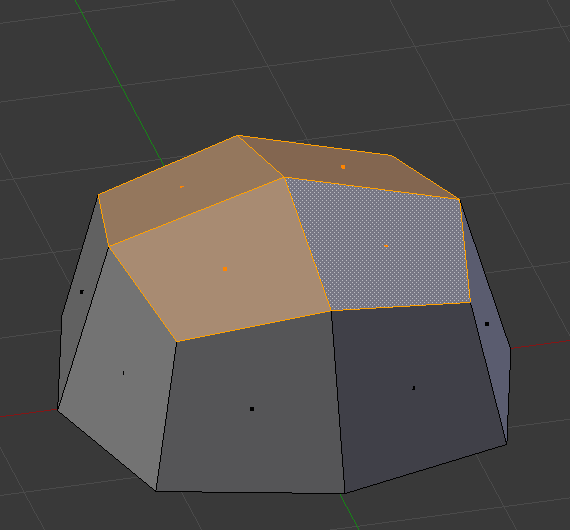

Видавлення -- Extrude¶
Засоби видавлення дублюють вершини, водночас зберігаючи нову геометрію з'єднаною з оригінальними вершинами. Вершини пов'язуються ребрами, а ребра будуть формувати грані.

Видавлена одинична вершина. |

Видавлене одиничне ребро. |
Цей інструмент має першорядне значення для створення нової геометрії. Він дозволяє вам створювати паралелепіпеди з прямокутників і циліндри з кіл, а також створювати такі речі, як гілки дерев.
Вісь, по якій вершини та ребра видавлюються, може задаватися інтерактивно. Грані стандартно видавлюються уздовж їх усередненої нормалі. Видавлення може лімітуватися одиничною вказаною віссю, дивіться тут -- Зблокування з віссю -- Axis Locking.
Засоби видавлення розрізняються тим, як нова геометрія з'єднується.
Видавити Регіон -- Extrude Region¶
Орієнтир -- Reference
| Mode: | Edit Mode |
|---|---|
| Panel: | |
| Menu: | |
| Hotkey: | E |
Видавлює тільки граничну петлю. Внутрішній регіон виділення пересувається без змін таким видом видавлення.

У ході видавлення. |

Видавлення задано по осі Z. |
{kind=link}
Подробиці¶
Хоча цей процес є досить інтуїтивним, принципи в основі Extrude є доволі складними, як обговорюється нижче:
- First, the algorithm determines the outside edge loop of the extrude; that is, which among the selected edges will be changed into faces. By default (see below), the algorithm considers edges belonging to two or more selected faces as internal, and hence not part of the loop.
- The edges in the edge loop are then changed into faces.
- If the edges in the edge loop belong to only one face in the complete mesh, then all of the selected faces are duplicated and linked to the newly created faces. For example, rectangles will result in parallelepipeds during this stage.
- В інших випадках виділені грані пов'язуються з новоствореними гранями, але не дублюються. Це запобігає небажаним граням бути залишеними «всередині» результатної сіті. Ця відмінність є надзвичайно важливою, оскільки вона гарантує побудову послідовно узгоджених, закритих об'ємів кожен раз при використанні Extrude.
- При видавленні повністю закритих об'ємів (як наприклад, куба з усіма його шістьма гранями) результатом його є просте дублювання, оскільки такий об'єм дублюється без будь-якого пов'язання з оригіналом.
- Edges not belonging to selected faces, which form an "open" edge loop, are duplicated and a new face is created between the new edge and the original one.
- Одиничні виділені вершини, які не належать виділеним ребрам, дублюються і між новою і старою вершинами створюється нове ребро.
Видавити Індивідуально -- Extrude Individual¶
Орієнтир -- Reference
| Mode: | Edit Mode |
|---|---|
| Panel: | |
| Menu: | |
| Hotkey: | Alt-E |
Extrude Individual дозволяє вам видавити виділення одночасно кількох граней індивідуально, замість їх регіону. Ці грані видавлюються уздовж їх власних нормалей, а не їх усередненої нормалі. Це має кілька наслідків: перше, «внутрішні» ребра (тобто, ребра між двома виділеними гранями) більше не видаляються (це є оригінальні грані).

Виділення одночасно кількох граней. |

Видавлення за допомогою Extude Region. |

Видавлення, використовуючи Extrude Individual. |
{kind=link}
Видавлення Лише Ребер або Лише Вершин -- Edges Only and Vertices Only¶
Орієнтир -- Reference
| Mode: | Edit Mode, Vertex and Edge |
|---|---|
| Panel: | |
| Menu: | |
| Hotkey: | Alt-E |
Якщо для видавлення виділяються вершини, які не формують ребра або грані, то вони будуть видавлені, як очікується, формуючи не-розгортне -- non-manifold ребро. Подібно, якщо виділяються ребра, що не формують грань, то вони будуть видавлені, формуючи грань.
Коли виділ вершин формує ребро або грань, то він видавлюється, ніби було вибрано ребро. Аналогічно, для ребер, що формують грань.
Для змушування виділу вершин або ребер видавлюватися як вершини або ребра, відповідно, використовується Alt-E для доступу до команд Extrude: Edges Only та Vertices Only.

Виділена вершина. |

Видавлення командою Vertices Only. |

Видавлення операцією Edge Only. |
{kind=link}
Видавити Повторно Сіть -- Extrude Repeat Mesh¶
Орієнтир -- Reference
| Mode: | Edit Mode |
|---|---|
| Menu: |
Цей засіб повинен викликатися за допомогою спливного меню Пошук оператора. Якщо виділ не є розгортним, то він видавлюється визначену кількість разів, інакше він поводиться подібно до Модифікатор «Масив» -- Array Modifier. Таке видавлення вирівнюється уздовж осі Z поточного огляду.
- Зсув -- Offset
- Відстань між примірниками.
- Кроки -- Steps
- Кількість примірників.